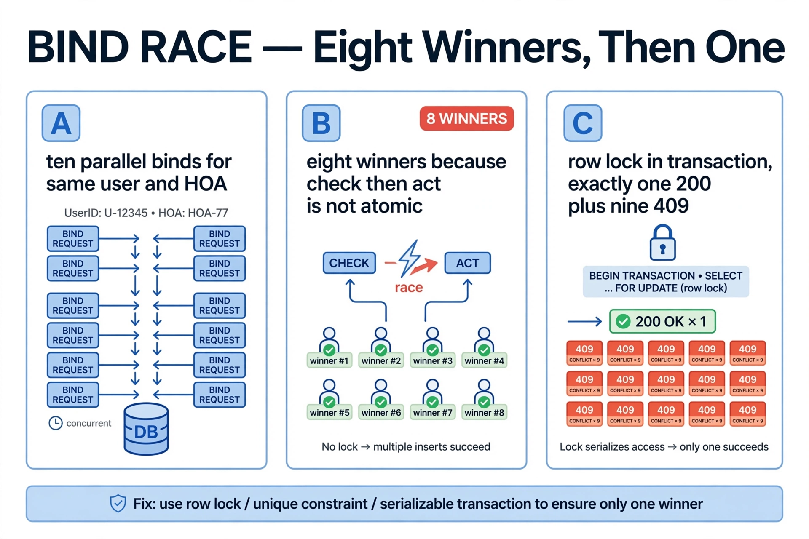
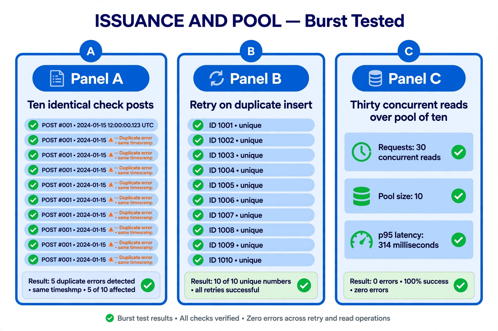
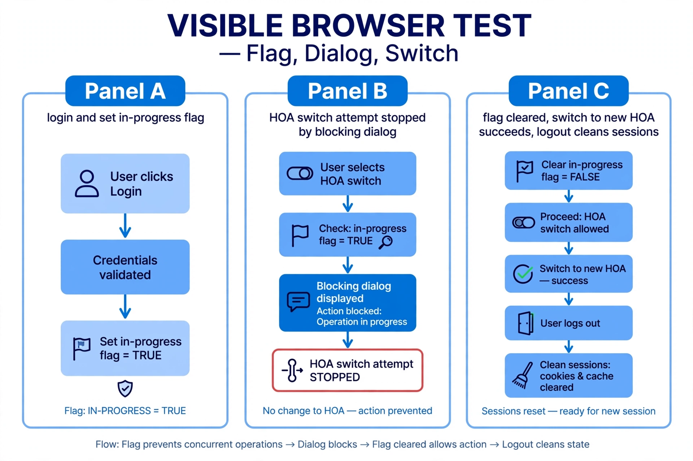
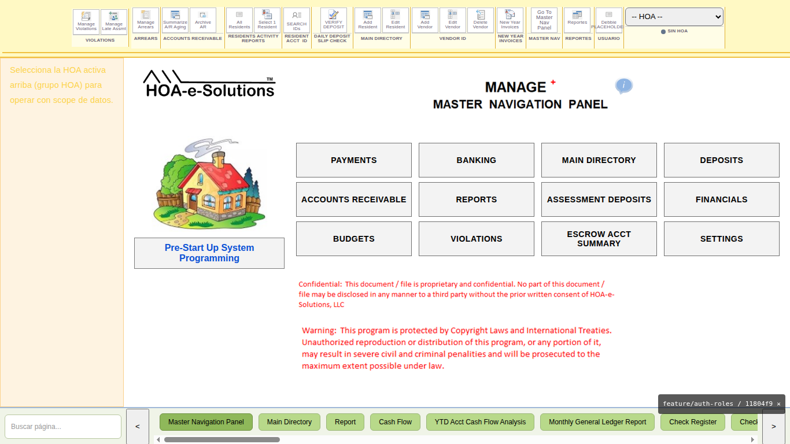
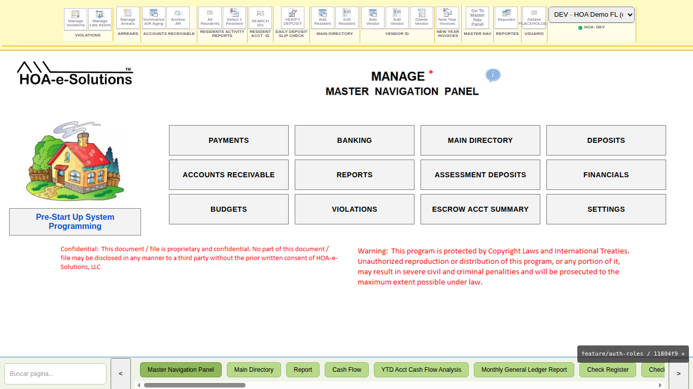

Branch: feature/auth-roles · Target: dev backend 3013 + hoamanager26_dev/hoam26_auth Production untouched (8888/9997/9998/9999 never exercised). All test data cleaned afterwards. Scripts: backend/scripts/stress-auth.js, stress-t1.js, stress-t2.js (committed, repeatable).
| # | Case | Result |
|---|---|---|
| 1 | Login storm 15× | 15/15 distinct sessions |
| 2 | 10 parallel binds, same (User, HOA) | 1×200 + 9×409 (after fix; first run: 8×200 — see bug below) |
| 3 | Cross-HOA reads (own/foreign mix) | own 200, foreign 403, zero 500 |
| 4 | Mutation with stale HOA context | 403, zero writes verified in DB |
| 5 | Cleanup | 0 active sessions, 0 STRESS residues |

Bug found by test 2: bindActiveHoa check-then-act was non-atomic — 8 parallel binds all won. Fix: transaction + SELECT … FOR UPDATE on the user row (serializes binds per user). Re-run: exactly one winner. No schema change (history preserved, per Rick).
10 identical POST check-register in one burst: first run 5×201 + 5×500 Duplicate entry (same timestamp tick; the generator's existence check cannot see uncommitted rivals). Fix: rollback + retry on ER_DUP_ENTRY (max 5) → 10/10 201, 10 unique numbers. 15 STRESS rows deleted afterwards, 0 leftovers.
30 heavy concurrent reads over a pool of 10: 30×200 — min 173 ms, p50 270 ms, p95 314 ms, max 318 ms. The queue drains cleanly.

Automated headed-Chromium run: login → set check-printing flag → HOA switch attempt → dialog *"No se puede cambiar de HOA ahora. | Operación en curso: check-printing. | Complétala o cancélala antes de cambiar."* → switch aborted (stored HOA unchanged) → flag cleared → switch to HOA 7 OK → logout. Session table left clean.



Note: native alert() is OS chrome and cannot appear in page screenshots; the dialog text above is verbatim from the run. Manual capture via NoMachine recommended for pixels.
CheckRegister STRESS rows: 0 · hoa.notes STRESS: 0 · LIC-HOA2 forged rows: 0 · test sessions active: 0 · TXN-DEV-* fixtures: intact.